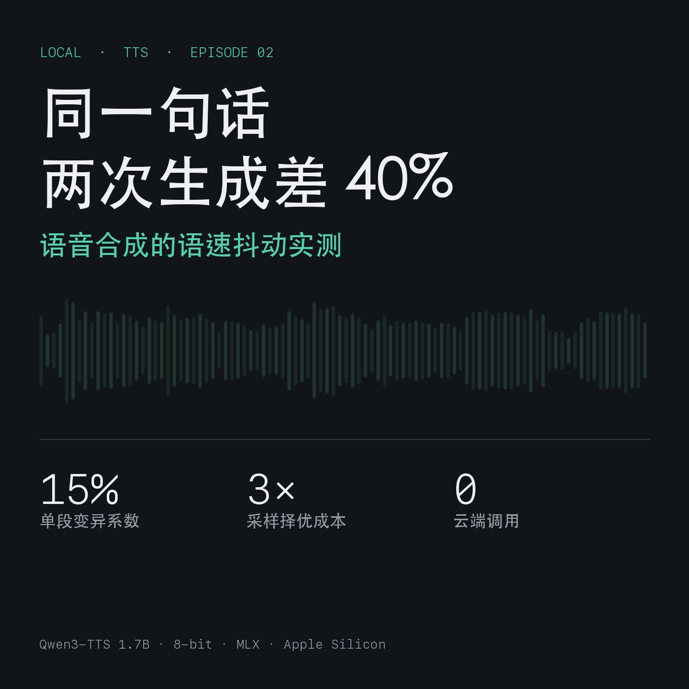

Local First · Episode 02
同一句话，两次生成差 40%：语音合成的语速抖动实测
本期音频 05:04 · 本机生成
2026-11-10 · 第 02 期配套文 · 24 次合成实验 音频：第 02 期（5 分 04 秒）· 原始数据：pacing.json
结论
- 句子越短，语速越不稳：15 字的句子，8 次生成长度从 3.43 s 到 7.89 s（极差 91%）；98 字的句子极差 35%。
- 这不是模型的"缺陷"，是采样的随机性：每次生成都在重新决定停顿位置与拖音长度，越短的文本里这些随机项占比越大。
- 三次采样择优能把抖动压到 10% 以内，代价是 3 倍算力——对一期 10 分钟节目，就是从 4 分钟变成 12 分钟。
实验设计
| 项 | 设置 |
|---|---|
| 文本 | 3 段：15 字 / 41 字 / 98 字 |
| 重复 | 每段 8 次，共 24 次合成 |
| 音色描述 | 24 次完全相同（"成年男性，低沉清晰，标准普通话，语速适中偏慢……"） |
| 预处理 | 每段首尾静音裁剪（-38 dB，保留 60 ms）后计时 |
| 环境 | M1 Max / 64 GB，Qwen3-TTS-1.7B VoiceDesign 8-bit，MLX，24 kHz |
数据
| 文本 | 字数 | 平均时长 | 标准差 | 变异系数 CV | 最短 | 最长 | 极差 |
|---|---|---|---|---|---|---|---|
| 短 | 15 | 4.91 s | 1.30 s | 26.5% | 3.43 s | 7.89 s | 90.8% |
| 中 | 41 | 11.26 s | 1.69 s | 15.0% | 9.70 s | 15.05 s | 47.5% |
| 长 | 98 | 24.52 s | 2.59 s | 10.6% | 21.12 s | 29.74 s | 35.2% |
换算成语速：
| 文本 | 平均语速 | 最快 | 最慢 |
|---|---|---|---|
| 短（15 字） | 194 字/分 | 262 字/分 | 114 字/分 |
| 中（41 字） | 223 字/分 | 254 字/分 | 164 字/分 |
| 长（98 字） | 242 字/分 | 278 字/分 | 198 字/分 |
最短那一段的语速可以差出 2.3 倍。 同一句话，一次像赶时间，一次像在拖时间。
这在成片里是什么样子
回看第 01 期（50 段真实数据）：
| 指标 | 值 |
|---|---|
| 语速区间 | 174 – 293 字/分 |
| 平均 | 234 字/分 |
| 变异系数 | 12.8% |
听众说不出哪里不对，但会觉得"这个人一会儿赶、一会儿拖"。连听十分钟，就是"状态不稳"。
决定"能不能连续听"的不是音色像不像人，是节奏的一致性。
三个解法（按性价比排序）
1. 别把句子切太碎（零成本）
实验里 20 字以下的段落是抖动重灾区（CV 26.5%）。实践上应把句子合并到 40 字以上再合成——宁可一次多念两句。这也解释了第 01 期里 CV 12.8% 的来源：那期有 14 段不足 30 字。
2. 采样择优（2–3 倍算力）
同一段生成 k 次，保留"语速最接近目标"的一次。用上面 24 次真实数据做 400 轮模拟（每次模拟 6 段）：
| k | 短文本极差 | 中文本极差 | 长文本极差 |
|---|---|---|---|
| 1（不择优） | 59.7% | 33.4% | 25.5% |
| 2 | 34.4% | 17.7% | 16.3% |
| 3 | 20.6% | 9.9% | 11.6% |
已实现为流水线参数：
python3 scripts/tts_pipeline.py --script episodes/ep02/script_zh.txt \
--out audio/ep02 --samples 3 --target-cpm 220
每次都打印候选的语速与偏离值，便于人工复核：
采样 1/2: 4.27s (225 字/分，偏离 5)
采样 2/2: 3.71s (259 字/分，偏离 39)
[1/2] 16字 → 裁剪后 4.3s，225 字/分
3. 给整期设一个目标语速，超差就重跑（工程化）
偏离目标 ±15% 就重跑。规则简单，但它把"随机"变成"可验收"：你有了明确的通过标准，而不是靠耳朵赌。
局限（必须说清）
- 单机、单音色、每种长度 8 次，样本小；跨模型/跨音色的结论需要另测。
- 语速只是"节奏"的一个代理指标；停顿分布、句尾语调没有量化。
- 择优策略会系统性偏向更快的语速（目标设为均值时，慢样本被淘汰）——需要按节目调性校准
--target-cpm。
复现
python3 scripts/experiment_pacing.py # 24 次合成 ≈ 2 分钟
cat experiment/pacing.json # 逐次时长 + 统计量
数据来自本机实测，脚本与原始记录在仓库内。第 03 期会用"合并短句 + 三次择优"重做一期，对比听感与语速分布。